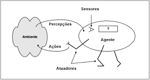
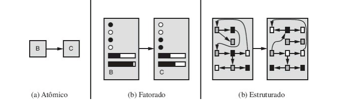

Conceitos a serem discutidos
Ambientes de tarefa
Ambientes são essencialmente os "problemas" para quais os agentes racionais são projetados para resolverem. Existem vários tipos de ambientes, e cada tipo, afeta diretamente o projeto apropriado para o programa do agente. Ao projetar um agente, a primeira tarefa deve ser sempre especificar o ambiente de tarefa de forma tão complexa quanto possível.
Completamente observável vs Parcialmente Observável
Se os sensores de um agente permitem acesso ao estado completo do ambiente em cada instante, detectando todos os aspectos que são relevantes para a escolha da ação, então o ambiente de tarefa é completamente observável, esse tipo de ambiente é conviente pois o agente não precisa manter qualquer estado interno para acompanhar as mudanças do mundo.
Um ambiente pode ser parcialmente observável devido a algum ruído, a sensores imprecisos ou porque partes do estado estão fora do alcance do sensor. O ambiente será não observável se o agente não possuir sensores.
Agente único vs multiagente
Um agente que resolve um jogo de palavras cruzadas sozinho é um agente único, enquanto um agente que joga xadrez é um multiagente. Apesar de simples é preciso se atentar a algumas sutilezas, como por exemplo se uma entidade pode ou não ser vista como um agente, multiagentes podem ser classificados em competitivos ou cooperativos.
Determinístico vs Estocástico
Caso o próximo estado do ambiente seja completamente determinado pelo estado atual e pela ação a ser executada pelo agente, então o ambiente é determinístico, caso contrário, ele é estocástico. Um ambiente não determinístico é aquele em que as ações são caracterizadas por seus possíveis resultados, sem probabilidade associada a ele.
Episódico vs Sequencial
Um ambiente é episódico se a experiência do agente pode ser dividida em episódios atômicos, onde em cada um o agente recebe uma percepção e em seguida executa uma única ação, é essencial que o próximo episódio não dependa das ações exxecutadas em episódios anteriores.
Um ambiente sequencial, uma decisão em um episódio pode afetar todas as decisões futuras, são exemplos desses ambientes: um jogo de xadrez e dirigir.
Estático vs Dinâmico
Um ambiente dinâmico é aquele que pode ser alterado enquanto um agente está utilizando-o, caso contrário o ambiente é estático. Ambientes estáticos são fáceis de manipular pois o agente não precisa continuar a observar o mundo enquanto age, nem se preocupar com a passagem do tempo, já ambientes dinâmicos estão sempre perguntando ao agente o que ele deseja fazer. Caso o ambiente não muda com a passagem do tempo, mas o nível de desempenho do agente se altera, então o ambiente é semidinâmico.
Discreto vs contínuo
A distinção entre discreto e contínuo aplica-se ao estado do ambiente, ao modo como o tempo é tratado, e às percepções e ações do agente. Por exemplo, um jogo de xadrez tem um número finito de estados distintos e um conjunto discreto de percepções e ações.
Conhecido vs Desconhecido
Essa distinção não se refere ao ambiente em si, mas ao estado de conhecimento do agente, ou do projetista, sobre as "leis da física" no meio ambiente.
O caso mais difícil seria um onde o ambiente pode ser classificado como parcialmente observável, multiagente, estocástico, sequencial, dinâmico, contínuo e desconhecido. Dirigir é difícil em todos esses sentidos, exceto que para a maioria dos motoristas o ambiente é conhecido.
Racionalidade
A definição do que é racional em qualquer instante dado depende de 4 fatores: A medida do desempenho que define o critério de sucesso, o conhecimento prévio que o agente tem do ambiente, as ações que o agente pode executar e por fim, a sequência de percepções do agente até o momento.
Um agente racional é aquele que faz tudo certo, em termos conceituais, toda entrada na tabela correspondente à função do agente é preenchida de forma correta. Para medir o desempenho do agente é preciso observar a sequência de estados do ambiente após as interações do agente, se a sequência for desejável, o agente teve um bom desempenho, onde essa noção de "desejável" é alcançada por uma medida de desempenho que avalia toda e qualquer sequência dada dos estados do ambiente.
É preciso ter o cuidado de distinguir racionalidade de inisciência, um agente onisciente sabe o resultado real de cada uma de suas ações e age de acordo com ele, a racionalidade maximiza o desempenho esperado. Uma escolha racional só depende da sequência de percepções até o momento atual.
Um agente racional deve ser capaz não apenas de coletar informações, mas também de aprender com o que ele percebe, um agente que se baseia no conhecimento anterior de seu projetista e não em suas próprias percepções é um agente sem autonomia.
Agentes

Um agente é qualquer coisa que pode perceber seu ambiente através de sensores e agir sobre este ambiente através de atuadores. Um agente humano tem olhos, ouvidos e outros órgãos como sensores, e tem mãos, pernas, e outras partes do corpo que servem como atuadores.
Em termos matemáticos, o comportamento do agente é descrito pela função do agente que mapeia qualquer sequência de percepções específica para uma ação. Enquanto que o programa do agente é uma implementação concreta, executada em um sistema físico.
Agentes de reflexo simples
Esses agentes selecionam ações com base na percepção atual, ignorando o restante do histórico de percepções, são do tipo se condição então ação.
Agentes de reflexo baseado em modelo
O agente monitora parte do mundo que ele não pode ver agora, ou seja, o agente mantém algum tipo de estado interno que depende do histórico de percepções e assim reflete pelo menos alguns dos aspectos não observados do estado atual.
Agentes baseados em objetivos
Nem sempre conhecer algo sobre o estado atual é o suficiente para tomar uma ação, as vez também é necessário um objetivo que descreva situações desejáveis.
Agentes utilitários
Sozinhos, os objetivos não são realmente suficientes para gerar um comportamento de alta qualidade na maioria dos ambientes, os agentes utilitários tendem a adicionar alguma característica a mais ao objetivo, como por exemplo, velocidade, segurança, economia, etc.
Representação de estados

Atômico
Cada estado do mundo é indivisível, não tem estrutura interna.
Fatorado
Um estado consiste em um vetor de valores de atributos; os valores podem ser booleanos, valores reais ou um conjunto fixo de símbolos.
Estruturado
Um estado inclui objetos; cada um deles podem ter atributos próprios, bem como relacionamentos com outros objetos
Referências
RUSSEL, Stuart; NORVIG, Peter. Artificial Intelligence: A modern Approach 3 ed. Elsevier 2009.